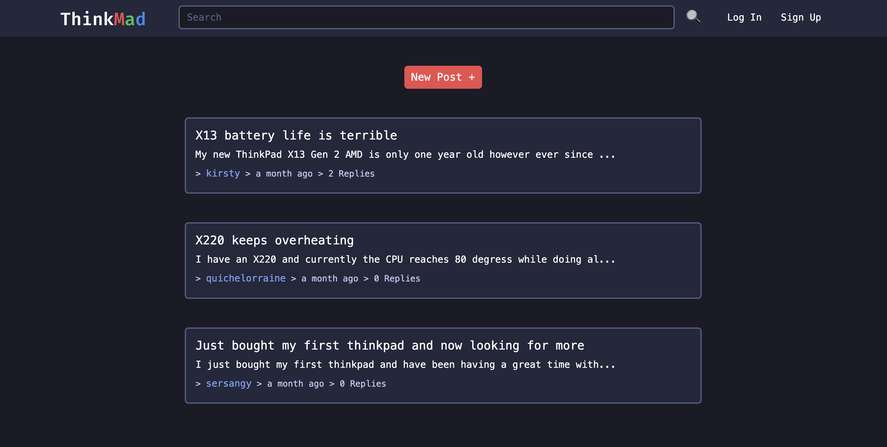
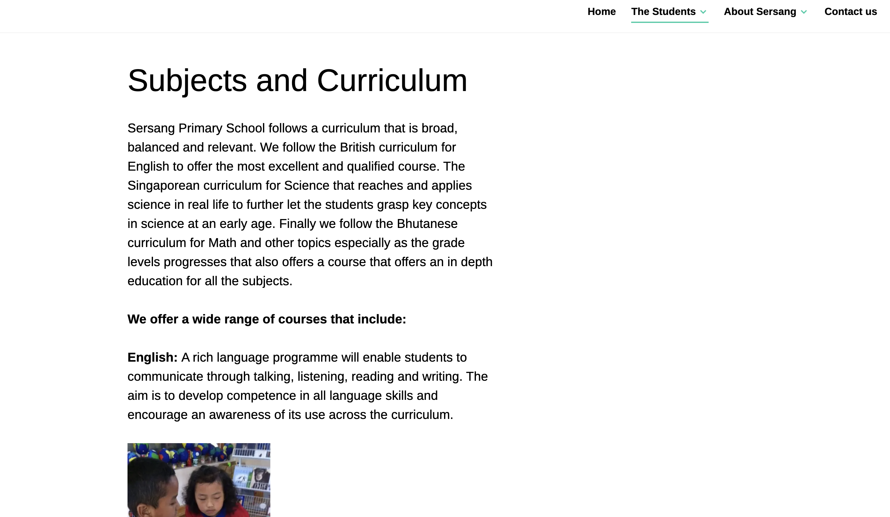

Bachelor of Science with a double major in Computer Science and Cybersecurity and a minor in Data Science
From the University of Western Australia
High School
International Baccalaureate Diploma
From Li Po Chun United World College Hong Kong
Languages
English
Dzongkha
Mandarin
Programming languages
Python
C
Java
R
JavaScript, HTML, CSS
TypeScript, React, Vercel
Bash
Projects
I have done a wide variety of projects during my course and outside of university which have all deepened my knowledge and given me valuable experience.
For my final third year project we had to work with a client to develop a software solution over the course of one semester. We were assigned to the Raine Research Center and developed an application to help find researcher's email address when supplied with their name and institution.
Testing demonstration
Using Go we developed a desktop/phone application through Scopus' API and google webscraping that fulfills the requirements. The video above demonstrates the full functionality of the app.

ThinkMad forum
Agile Web Development Group Project
2024
For my agile website development group project we made a discussion forum site that allows ThinkPad users and enthusiasts to share their knowledge, help others, and talk about all things ThinkPad related. It uses a question and response system, with users being able to create an account, and then use this account to post questions and respond to existing questions from other users. During my Agile Web Development unit, I collaborated on a project to develop a user request forum for ThinkPad users, employing HTML, CSS, Bootstrap, JQuery, AJAX, Flask, and SQLite. Managed via Agile methodology and GitHub for version control, the project was rigorously tested using Selenium and python unittests
During the summer I volunteered in a summer project with Coders for Causes, where we developed a website for Starick, a domestic violence charity. Our tech stack included Vercel for deployment, TypeScript for scripting, and Headless WordPress as the backend. This experience enhanced my ability to work collaboratively in a team, manage project requirements, and deliver a functional and impactful web application.
During my Super Mario AI project, I developed AI agents to control Mario in the Super Mario Bros game using the gym-super-mario-bros environment. I implemented a Rule-based AI and a Reinforcement Learning (RL) AI using Stable Baselines. The RL agent was fine-tuned for optimal performance, which involved addressing challenges in AI agent performance and optimization. Through this project, I gained skills in AI algorithm implementation, model optimization, and performance evaluation. I utilized Python and Stable Baselines for AI training and development, showcasing my technical proficiency and problem-solving abilities in enhancing AI agent effectiveness.
Rule-based AI agent
I implemented a rule-based agent to play Super Mario Bros using Python, OpenCV, and Gym. The script utilizes Gym for the game environment and JoypadSpace to simplify controls, enabling seamless interaction with the game. Using OpenCV (cv2), I implemented template matching to locate various objects on the screen, including Mario, enemies like goombas and koopas, different types of blocks such as question blocks and pipes, and items like mushrooms. The make_action function I developed uses these object locations to make decisions in real-time gameplay. For instance, the agent jumps over enemies, navigates pipes, handles gaps, and manages stairs based on their positions relative to Mario. This project has sharpened my skills in computer vision, object recognition, and rule-based AI programming, while also demonstrating how to integrate these techniques into interactive game environments effectively using Python.
Stablebaselines Reinforcement learning AI agent
The video above shows our AI model at 2.03 million steps, that was the optimal model given our time and computing power constraints. This project involved using reinforcement learning (RL) to train an AI agent to play Super Mario Bros. Initially, the game environment is set up and preprocessed by simplifying controls and converting frames to grayscale. A Proximal Policy Optimization (PPO) algorithm is employed for training using stable baselines3, with a custom callback implemented to save checkpoints during the training process. The AI model learns over 1,000,000 time steps, aiming to optimize gameplay. Once trained, the model is tested by predicting actions in real-time based on game states, demonstrating its ability to autonomously play and navigate through the game environment. This project enhanced my skills in RL fundamentals, Python programming, deep learning application, and game AI development.
CMS projects
I have also done projects in website development through using CMS

Sersang school wordpress site
Sersang School WordPress Site
2016
For a small Bhutanese Primary school I made a website for them to help them advertise for my middle school digital design project. I used WordPress CMS to make the website.
For the McCusker citizenship internship during my second year, I worked at WACSSO on developing and improving their website. I learnt a lot about how to use Umbraco and I improved the layout and added some automation for their website.
Some of my other unit projects that have enriched my skills, particularly in systems knowledge, C and data anlysis.
Systems programming projects
During the CITS2002 Systems Programming project, I developed a command-line utility named mysync to synchronize the contents of two or more directories, ensuring identical file sets across multiple computers and USB drives. The project involved implementing advanced features of the C11 programming language, utilizing POSIX function calls, and creating a comprehensive Makefile for compilation and linking. I employed various system calls such as opendir, readdir, and stat to read directory contents, and implemented support for multiple command-line options, including recursive synchronization and file pattern matching using globbing and regular expressions. Through this project, I gained proficiency in system programming, file manipulation, and command-line interface design, while also enhancing my skills in C11, POSIX functions, and make utility.
Data Science Report
In this project, I investigated trends in weekly rent changes in Australia from 1996 to 2021 using census data sourced from the Australian Bureau of Statistics (ABS). I processed and analyzed data across different years, adjusted for inflation, and visualized trends using bar and pie charts to understand rent distribution and landlord types. This project involved extensive data manipulation, including reading and transforming CSV files, handling Excel spreadsheets, and categorizing data into meaningful formats. Additionally, I gained proficiency in Python programming, data visualization with Matplotlib, and statistical analysis, enhancing my ability to handle real-world datasets, perform complex data processing tasks, and derive insights from large-scale data.
Statistics Assignment in R
In the STAT2401 Analysis of Experiments project for Semester 1, 2024, I undertook a comprehensive examination that covered a wide array of statistical techniques and methodologies using R. Throughout the project, I acquired proficiency in several key areas. These include data manipulation and analysis using packages such as ggplot2, PerformanceAnalytics, leaps, and MASS. I demonstrated competence in regression analysis, including simple linear regression, multiple linear regression, and model diagnostics. Moreover, I applied advanced statistical tests such as ANOVA, correlation tests, and hypothesis testing. Additionally, I gained practical experience in interpreting and visualizing data through various plots and summary statistics. This project not only enhanced my technical skills in R programming but also deepened my understanding of statistical concepts essential for data analysis in research and professional settings.
Computer Networks Project
For my Computer Networks Group project, we developed a distributed server application to facilitate queries about bus and train routes within a simulated transport network akin to Transperth. This project involved implementing station servers in both Python and C, utilizing TCP for HTTP-based queries from web browsers and UDP for inter-server communication. Each station server managed its timetable data, handling dynamic updates and responding to queries for route information between stations. Skills I acquired included proficiency in network programming with sockets, managing concurrent connections, parsing and storing data structures from text files, and designing a custom communication protocol. The project emphasized understanding of network protocols, system-level programming, and real-time data management within a distributed computing environment.
For our final knowledge representation we had to build a knowledge base and make a website that queries the knowledge base and displays it.
Application demonstration
Volunteering experiences
During my time in university I have always made an extra effort to give back to the community and take part in university life. Please click on the images below for a detailed description of each role.
Coders for Causes Marketing Officer
As the Marketing Officer for Coders for Causes, I spearheaded the social media marketing efforts for our events and workshops, ensuring effective outreach and engagement. In addition to my marketing responsibilities, I actively contributed to the organization and smooth execution of various events as a committee member. Furthermore, I participated in our summer project, where I collaborated with the team to develop a website for Starick, enhancing my skills in project management and digital marketing.
Coders for Causes Marketing Officer
Programming Competition Society Ordinary Committee Member
As an Ordinary Committee Member of the Programming Competition Society, I contributed to social media marketing efforts for our events, ensuring they reached a wide audience. I played a key role in running and organizing workshops, helping to plan and execute events smoothly. Additionally, I actively participated in programming competitions, gaining valuable experience and contributing to the society's vibrant community.
Programming Competition Society Ordinary Committee Member
UWA International Student Department PR Liason OCM
As an Ordinary Committee Member and PR Liaison for the UWA International Student Department, I participated in meetings with various clubs and facilitated communication between sponsors and UWA clubs. I assisted in organizing and running social events and workshops, ensuring their smooth execution. My role involved coordinating with different stakeholders to enhance the department's outreach and effectiveness in serving the international student community.
UWA International Student Department PR Liason OCM
UWA UniMentor
As a UWA UniMentor, I supported 5-6 mentees over two semesters, helping them adapt to their new lives at UWA. I provided guidance and assistance through campus tours, ensuring they became familiar with the university environment. Additionally, I volunteered for a Perth city tour, further aiding my mentees in acclimating to their new surroundings and enhancing their overall experience at UWA.
UWA UniMentor
UWA Guild Volunteering
During my time volunteering with the UWA Guild, I actively contributed to organizing and selling books at book sales, ensuring smooth transactions and helping fellow students find the resources they needed. Additionally, I dedicated time to spend with elderly people, offering companionship and support, which enhanced my interpersonal skills and deepened my sense of community involvement.
UWA Guild Volunteering
St Catherines College volunteering
During my volunteering experience at St Catherine's College, I provided tours to prospective parents and families, showcasing the college's facilities and fostering a welcoming atmosphere. Additionally, I contributed to the Danjoo Darbalung Indigenous initiative by helping paint a mural, supporting cultural representation and engagement within the college community.